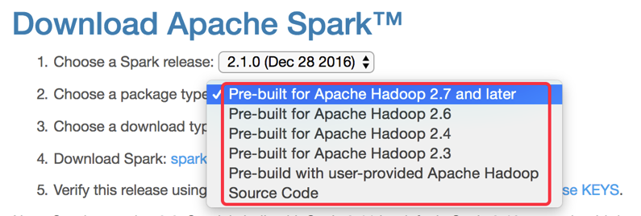
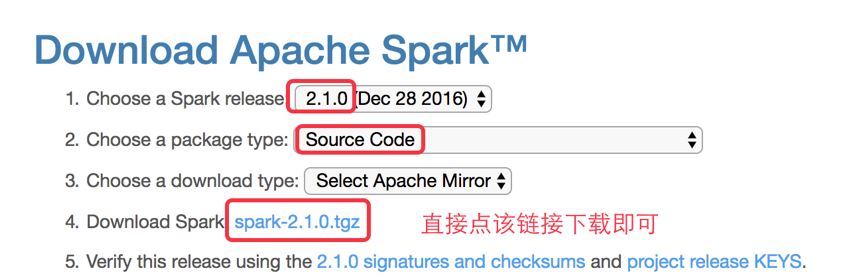
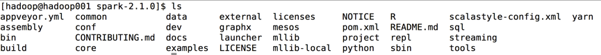

Spark源码编译
1 写在前面的话
有些小伙伴可能会问：Spark官网不是已经提供了Spark针对不同版本的安装包了吗，我们为什么还需要对Spark源码进行编译呢？针对这个问题我们到Spark官网: spark.apache.org来看下，如下图所示:

Spark官网的确是提供了一些Hadoop版本的Spark安装包，但是提供的这些是否能够满足我们的要求呢？答案肯定是否定的，原因如下几点
- 在生产环境中Hadoop的选型，很大部分都是CDH或者HDP系列的，那么官方提供的这几个Hadoop系列是否能够生产的需求？
- 在开发过程中，我们经常会遇到需要对Spark的源码进行修改，那么修改后的代码如何集成到Spark安装包中去呢？
针对如上列出的两点的个人觉得比较好的最佳实践：
- 根据生产上运行的Hadoop版本编译出Spark的安装包
- 修改Spark源码之后，重新编译Spark
所以：个人觉得如果想更好的学习和使用Spark，那么第一步就是要会根据Spark源码编译出安装包。
2 前置准备
根据Spark官方文档编译模块的介绍（http://spark.apache.org/docs/2.1.0/building-spark.html ）的介绍：
1 | The Maven-based build is the build of reference for Apache Spark. Building Spark using Maven requires Maven 3.3.9 or newer and Java 7+. Note that support for Java 7 is deprecated as of Spark 2.0.0 and may be removed in Spark 2.2.0.” |
我们得知：
- Java需要7+版本，而且在Spark2.0.0之后Java 7已经被标识成deprecated了，但是不影响使用，但是在Spark2.2.0版本之后Java 7的支持将会被移除；
- Maven需要3.3.9+版本
2.1 Java7的安装
2.1.1 下载
Java SE安装包下载地址：
https://www.oracle.com/technetwork/java/javase/downloads/jdk8-downloads-2133151.html
本文章我们使用的JDK版本是：jdk1.8.0_181
2.1.2 安装
我们所有的软件都安装在hadoop用户的根目录的app文件夹下
1 | //解压 |
2.2 Maven3.3.9的安装
2.2.1 下载
Maven3.3.9安装包下载地址：
https://mirrors.tuna.tsinghua.edu.cn/apache//maven/maven-3/3.3.9/binaries/
2.2.2安装
1 | // 解压 |
2.3 Spark-2.1.0源码下载
下载地址：http://spark.apache.org/downloads.html

下载完成后解压即可，解压后的目录结构如下图所示

3 Spark源码编译
查看官方文档编译源码部分：http://spark.apache.org/docs/2.1.0/building-spark.html#building-a-runnable-distribution
我们可以使用Spark源码目录中的dev下的make-distribution.sh脚本，官方提供的编译命令如下：
1 | ./dev/make-distribution.sh --name custom-spark --tgz -Psparkr -Phadoop-2.4 -Phive -Phive-thriftserver -Pmesos -Pyarn |
参数说明：
- –name：指定编译完成后Spark安装包的名字
- –tgz：以tgz的方式进行压缩
- -Psparkr：编译出来的Spark支持R语言
- -Phadoop-2.4：以hadoop-2.4的profile进行编译，具体的profile可以看出源码根目录中的pom.xml中查看
- -Phive和-Phive-thriftserver：编译出来的Spark支持对Hive的操作
- -Pmesos：编译出来的Spark支持运行在Mesos上
- -Pyarn：编译出来的Spark支持运行在YARN上
那么我们可以根据具体的条件来编译Spark，比如我们使用的Hadoop版本是2.6.0-cdh5.7.0，并且我们需要将Spark运行在YARN上、支持对Hive的操作，那么我们的Spark源码编译脚本就是：
1 | ./dev/make-distribution.sh --name 2.6.0-cdh5.7.0 --tgz -Pyarn -Phadoop-2.6 -Phive -Phive-thriftserver -Dhadoop.version=2.6.0-cdh5.7.0 |
编译成功后，在Spark源码的根目录中就是spark-2.1.0-bin-2.6.0-cdh5.7.0.tgz包，那么我们就可以使用编译出来的这个安装包来进行Spark的安装了。
有小伙伴可能会问，为什么编译出来的安装包的名称是spark-2.1.0-bin-2.6.0-cdh5.7.0.tgz呢？我们可以带着这个疑惑，查看make-distribution.sh的源码，在该脚本的最后部分，有如下代码：
1 | if [ "$MAKE_TGZ" == "true" ]; then |
该VERSION就是我们Spark的版本即2.1.0，NAME就是我们在编译时指定的2.6.0-cdh5.7.0，所以根据该脚本最终输出的Spark安装包的全称为: spark-2.1.0-bin-2.6.0-cdh5.7.0.tgz。通过该代码的查看希望大家能明白一个问题：源码面前，了无秘密。
注意：在编译过程中会出现下载某个依赖包的时间太久，这是由于网络问题，可以执行ctrl+c停止编译命令，然后重新运行编译命令，在编译过程中多试几次即可。有条件的小伙伴，建议开着VPN然后再进行编译，整个编译过程会顺畅很多。
编译好的spark-2.1.0-bin-2.6.0-cdh5.7.0版本链接为：
https://download.csdn.net/download/bingdianone/10824595
Spark环境编译中的问题：
编译命令
1 | ./dev/make-distribution.sh \ |
如果在编译过程中，你看到的异常信息不是太明显/看不太懂
编译命令后 -X ，就能看到更详细的编译信息
问题一
1 | Failed to execute goal on project spark-launcher_2.11: |
问题一解决：pom.xml添加：
1 | <repository> |
问题二
1 | export MAVEN_OPTS="-Xmx2g -XX:ReservedCodeCacheSize=512m -XX:MaxPermSize=512M" |
注意点：
有些是阿里云的机器，但是你这机器的内存可能有限的，建议你们vm至少2-4G
VM：设置8G
1 | [info] Java HotSpot(TM) 64-Bit Server VM warning: INFO: os::commit_memory(0x00000000e8f84000, 18800640, 0) failed; error='无法分配内存' (errno=12) |
问题三
如果编译的是scala版本是2.10
需要加上
./dev/change-scala-version.sh 2.10
./dev/change-scala-version.sh 2.11
问题四
1 | was cached in the local repository, |
1） 去仓库把 xxx.lastUpdated文件全部删除，重新执行maven命令
2） 编译命令后面 -U
Spark环境搭建
Spark Local模式环境搭建
直接解压spark-2.1.0-bin-2.6.0-cdh5.7.0.tgz
配置好环境变量 可以直接使用。
Spark Standalone模式环境搭建
【了解即可,因为几乎没有公司直接运用Standalone模式,市场上Spark作业几乎都是run在yarn上】
Spark Standalone模式的架构和Hadoop HDFS/YARN很类似的
1 master + n worker
1 | 修改 /home/hadoop/app/spark/conf/spark-env.sh |
Spark WordCount统计
1 | val file = spark.sparkContext.textFile("file:///home/hadoop/data/wc.txt") |